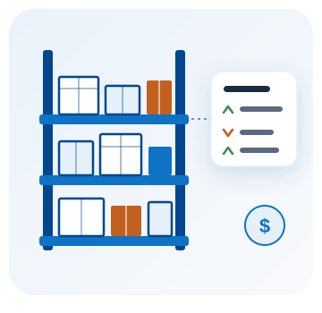

Control de Inventarios
Sabe qué tienes, en qué bodega está y cuánto te costó, sin llevar la cuenta en un cuaderno.

Tu stock al día, sin cuadernos ni hojas de cálculo
Registra lo que compras, lo que sale y lo que ajustas, y el sistema mantiene el saldo de cada producto en cada bodega. Cada movimiento queda anotado con su fecha, su motivo y el saldo que dejó, así que cuando un número no cuadra puedes ver exactamente dónde empezó.
Funciona solo o acompañado: puedes contratar el inventario sin facturación electrónica. Y si facturas con nosotros, activas una casilla y cada factura autorizada por el SRI descuenta el stock sola.
Todo esto, en los tres planes
- Catálogo con categorías, marcas y unidades
- Existencias por producto y por bodega
- Kardex con cada entrada, salida, ajuste y transferencia
- Compras con proveedor que recalculan el costo
- Costo promedio ponderado por producto
- Aviso de stock mínimo, producto por producto
- Informes de valorización, rotación, movimientos y reposición
- Descuento automático al facturar, si también facturas con nosotros
- Acceso desde computadora, tablet o celular
¿Por qué llevarlo con SysDevUp?
Por bodega
Cada producto tiene su saldo en cada bodega, y las transferencias entre ellas quedan registradas.
Con historial
El kardex guarda cada movimiento con su saldo, como el extracto de una cuenta. Nada se borra.
Con informes
Cuánto vale tu inventario, qué se mueve, qué está dormido y qué hay que reponer esta semana.
Con acompañamiento
Cuenta con soporte para resolver dudas y para arrancar con tus existencias bien cargadas.
Planes de control de inventarios
Los tres planes tienen las mismas funciones. Lo único que cambia es cuántos productos activos puedes tener. Todos tienen una vigencia de 12 meses.
Se contrata aparte de la facturación electrónica, y puedes empezar por el plan gratuito y cambiarte cuando tu catálogo crezca.
Gratis
Para ordenar lo que ya tienes, sin pagar nada
$0 /año
Hasta 25 productos activos
- Catálogo, bodegas y existencias
- Kardex de todos los movimientos
- Compras con proveedor y costo promedio
- Aviso de stock mínimo
- Los cuatro informes
- Acceso desde computadora y celular
Básico
Para un negocio con catálogo de verdad
$15 /año
Hasta 250 productos activos
- Todo lo del plan Gratis
- Diez veces más productos activos
- Para un catálogo de hasta 250 referencias
- Puedes subir desde el plan gratuito cuando quieras
Pro
Para distribuidoras y comercios con catálogo amplio
$39 /año
Hasta 1.500 productos activos
- Todo lo del plan Básico
- Seis veces más productos que el plan Básico
- Para catálogos que no paran de crecer
- ¿Más de 1.500? Lo conversamos
¿No sabes cuántos productos tienes? Escríbenos por WhatsApp: revisamos tu lista contigo y te decimos con qué plan te alcanza. Y si tu catálogo pasa de 1.500, también lo conversamos.
Preguntas frecuentes sobre el control de inventarios
¿Necesito facturación electrónica para llevar el inventario?
No. El control de inventarios funciona por su cuenta y se contrata por separado. Si además facturas con nosotros, puedes activar que cada factura autorizada por el SRI descuente el stock automáticamente.
¿Qué diferencia a los tres planes?
Solo cuántos productos activos puedes tener: 25 en el plan Gratis, 250 en el plan Básico y 1.500 en el plan Pro. Las funciones son exactamente las mismas en los tres, y si necesitas más de 1.500 lo conversamos.
¿Qué es un producto activo?
Es un producto que tienes disponible en el sistema. Lo que cuenta para el plan son los activos: si desactivas uno que ya no vendes, la plaza queda libre en el acto y su historial se conserva.
¿Qué pasa si llego al límite de productos?
El sistema te avisa al guardar y no crea el producto. Puedes desactivar alguno que ya no vendas o cambiar a un plan superior; el cambio se aplica de inmediato.
¿Puedo tener varias bodegas?
Sí, en los tres planes. Cada producto lleva su saldo por bodega y puedes transferir mercadería entre ellas; la transferencia queda registrada como cualquier otro movimiento.
¿Cómo se calcula el costo de lo que tengo en bodega?
Con costo promedio ponderado. Cada compra que confirmas recalcula el costo del producto, y el informe de valorización te dice cuánto vale el inventario a esa fecha.